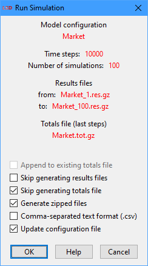
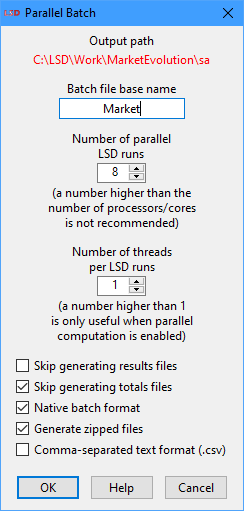
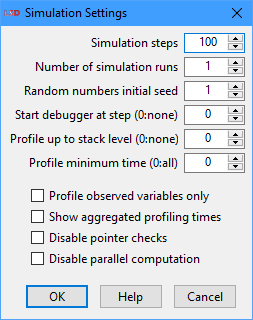

LSD Browser – Menu Run
This menu provides commands to start simulation runs and to set-up the run-time configuration of the model (not related with the model structure and initialization configuration). It is organized in groups dealing with the dispatching of simulation runs, the simulation run-time specific settings and the run-time plots management.
Commands for dispatching simulation runs:
· Run
Shortcuts: Ctrl+R or click the blue play/triangle icon on the tool bar.
Start the simulation run. If there are no unsaved model configuration changes and just a single run is configured, the simulation will start immediately, showing the LSD Run-time Plot if there is at least on Variable set for run-time plotting.
If there is unsaved configuration data (changes to the current configuration not saved to the loaded .lsd configuration file), LSD will request the user to confirm the updating of the .lsd configuration file before proceeding. If not explicitly unmarked by the user, LSD will overwrite the current configuration file with the pending changes. See below for details on this option.
If a single simulation run is configured (the default) the simulation run results are stored in memory only. After the simulation run is finished, the user has the option of saving results to a file using the command File>Save Results.
If there are multiple simulation runs configured in the Run>Simulation Settings menu entry, LSD issues a confirmation message (see example below), telling how the results data will be handled and providing some options to the user.

The available checkbox options are (some may not be available according to the circumstance):
· Append to existing totals file: if checked, appends the new results to the existing .tot[.gz] totals file (produced in a previous run). This entry is enabled only if a totals file exists for the current configuration file.
· Skip generating results files: if enabled, LSD will not produce the time-series detailed .res[.gz] results files, generating only the summarized .tot[.gz] totals file.
· Generate zipped files: if marked (default), all the produced files will be saved in compressed gzip format (indicated by the .gz extension). Compressed files use far less disk space and are faster to save/load. LSD and many data analysis applications (like R) can read .gz compressed files directly, without the need for the user uncompressing them before use.
· Comma-separated text format (.csv): if checked, all produced files will be saved in comma-separated text format (extension .csv), which can be imported by almost any data application. Please note that .csv files do not contain the same level of detail as native LSD .res or .tot formats and so cannot be used by the Analysis of Results module.
· Update configuration file: if selected (default), the unsaved changes will be saved to the current .lsd configuration file before simulation is executed. Please note that changes will be lost if this checkbox is unmarked and the user press OK.
When multiple simulation runs are configured, at the end of each simulation run the results are saved to LSD results and totals files (.res[.gz], .tot[.gz] or .csv extension, according to the selected options) in the same subdirectory as the .lsd configuration file. The names of the produced files are composed by the name of the current model configuration plus an integer number equal to the seed used for the pseudo-random number generator, separated by an underscore.
In a multiple-run exercise, LSD creates one results file (.res[.gz] extension) per run. A multi-run, single totals file (.tot[.gz] extension) is also produced, including as many lines as the number of runs. Each line of this file contains the values of the saved elements at the very last time step of each simulation. This file can be used, for instance, to perform robustness tests over the whole set of simulation runs.
Please note that if there are Variables set for the LSD Run-time Plot during multiple runs, there will be as many plots as simulation runs, possibly crowding the computer desktop with dozens of windows. Please remove the run-time plot flags from all variables, before running the simulation, if this is not desired or use the command Run>Close Run-time Plots, after the simulation is run, to close all the opened windows.
Start a simulation run batch in which, differently from the Run>Run command above, the simulation is directly executed by the computer operating system in background. Because the no-window simulation run is performed independently from LSD, the execution progress is not shown in the Log window and no Run-time Plot window is created. This way, the user can continue to interact with LSD while the simulation is being executed, even to start additional no-window batches.
To use this command, the user must first create a no-window (command prompt) version of the model in LMM by selecting menu Model>Create 'No Window' Version. This special version of the LSD model program is required to process the no-window batch. Make sure to update (recompile) the no-window version of your model every time you change your equation file (a warning box will show if do not do so).
Irrespective of the number of simulation runs configured in the Run>Simulation Settings menu entry, LSD will issue a confirmation message, telling how the results data will be handled and providing some options to the user. The confirmation dialog and the available options are similar to those available for the Run>Run command above.
The results are saved to LSD results and totals files (.res[.gz], .tot[.gz] or .csv extension, according to the selected options) in the same subdirectory as the .lsd configuration file. The names of the produced files are composed by the name of the current model configuration plus an integer number equal to the seed used for the pseudo-random number generator, separated by an underscore. LSD creates one results file (.res[.gz] extension) per run. A multi-run, single totals file (.tot[.gz] extension) is also produced, including as many lines as the number of runs. Each line of this file contains the values of the saved elements at the very last time step of each simulation.
A log text file (.log extension) is also created in the configuration file subdirectory. This file contains the output that is normally directed to the LSD Log window. Checking it the user can verify the status of the simulation running in background, any errors and warnings produced, and when the simulation execution is finished. After starting the background execution, LSD offers to launch the tail application to follow up the simulation execution. Windows users need Cygwin or MSYS2 installed to access this application (see readme.txt for installation instructions). Users can also follow up the log file in real time using the terminal command tail -F YYYY/XXXX.log, where YYYY is the configuration subdirectory and XXXX is the configuration name. For the same purpose, Windows users can also manually execute the utility Tail.exe, included in the subdirectory gnu/bin in the LSD installation directory, and open the log file using the File>Open menu command.
Create and optionally start a multiple simulation runs batch. The user has different alternatives to select the .lsd configuration files to be used for the simulation execution (see below). Differently from the Run>Run command above, the simulation runs in the batch are configured to be executed in parallel by the computer operating system, in background. Also differently from Run>Start 'No Window' Batch, this command may not automatically start the created batch job.
Immediately after issuing this command, LSD offers three alternatives to select which configuration files to include in the parallel batch job. If a set of configuration files was just created, using one of the sensitivity analysis sampling commands, it offers the possibility to automatically select this set. Other than this, the user may (1) select a continuous-numbered sequence of configuration files in the format XXXX_NNN.lsd, where XXXX is the common configuration name and NNN is the first sequential number to use, or (2) use the Ctrl key to pick multiple .lsd files with any name. All configuration files must be in the same subdirectory.
This command creates an operating system batch/script file (.bat extension in Windows or .sh in Linux/macOS) containing the required commands to run all the selected configuration files taking full advantage of the operating system multithreaded support. This means that multiple hardware CPU cores may be used in parallel, significantly accelerating the execution of multiple simulation runs, as in the case of sensitivity analysis processing. The batch file is saved to the subdirectory of the current configuration file (as indicated in the Log window).
The possibility of not starting processing the batch job immediately is important when the user can use another computer (typically a high-capacity server) to run the simulations. If this is the case, the user must copy the entire model home directory (including subdirectories) to the new machine and execute the created XXXX.bat (Windows) or XXXX.sh (Linux/macOS) in the same subdirectory as the selected configuration files. In Windows, a double click in this file on the file Explorer is sufficient to start the batch. In Linux/macOS the user typically has to open a terminal window and use the command YYYY/XXXX.sh, where YYYY is the configurations subdirectory and XXXX is the script name (use ./XXXX.sh if already in the configurations subdirectory). If required, the user may have to change the script file attributes to allow its execution using the command chmod +x YYYY/XXXX.sh before usage.
Because the parallel simulation run is performed independently from LSD, the execution progress cannot be shown in the Log window and no Run-time Plot window is created. This way, the user can continue to interact with LSD while the simulation is being executed or even close it.
To use this command, the user must first create a no-window (command prompt) version of the model in LMM by selecting menu Model>Create 'No Window' Version. This special version of the LSD model program is required to process the no-window batch. Make sure to update (recompile) the no-window version of your model every time you change your equation file (a warning box will show if do not do so). If the no-window version was created in a different operating system (including different Linux distributions), it has to be recompiled in the target machine. If the machine offers a graphical interface environment, the simplest way to recompile is simply installing LSD on it and use LMM as usual. If a graphical interface is not available (like in a server environment), or otherwise installing LSD is not possible, the no-window version may be recompiled in a terminal window. Move to the model home directory (cd YYYY) and use the command make -f makefileNW to recreate a proper no-window executable version (GCC and make must be installed in the machine).
Irrespective of the number of simulation runs configured in the Run>Simulation Settings menu entry, LSD will issue a confirmation message, telling how the CPU cores and the results data will be handled and providing some options to the user, as shown below.

The available options are (some may not be available according to the circumstance):
· Batch file base name: the name of the batch or script files to be created without the .bat/.sh extension. The default is the current configuration name. The file is created in the same subdirectory as the configuration files.
· Number of parallel LSD processes: sets the maximum number of LSD simulation runs to execute in parallel. The default is the number of CPU (logical) cores of the current computer. In general, this number should be less or equal to the number of (logical) cores available in the computer where the job is going to be executed (beware if it is a different machine from the current one). When running in a shared server, it may be sometimes useful to not allocate all the available cores to the batch job even if all executed LSD processes are started with the nice job priority.
· Number of threads per LSD process: defines how many threads each individual LSD simulation may spawn (the default is just one). If the Number of parallel LSD processes setting is left at default (to use all cores), it is recommended the default value of 1 is not changed (using a larger value will just increase the operating system overhead). It is recommended that the product between the two settings be less or equal to the number of (logical) cores available in the computer where the job is going to be executed (beware if it is a different machine from the current one). If the current model configuration does not use parallel object computation (see details here), this option has no effect.
· Skip generating results files: if enabled, LSD will not produce the time-series detailed .res[.gz] results files, generating only the summarized .tot[.gz] totals file.
· Native batch format: if checked (default), LSD will produce a batch/script file appropriate for the current operating system (.bat batch in Windows or .sh script in Linux/macOS). The user may uncheck this option to produce the batch/script in a format adequate to be executed in a different operating system (e.g., generating a Linux/macOS script in a Windows computer, for later execution in a Linux server).
· Generate zipped files: if marked (default), all the produced files will be saved in compressed gzip format (indicated by the .gz extension). Compressed files use far less disk space and are faster to save/load. LSD and many data analysis applications (like R) can read .gz compressed files directly, without the need for the user uncompressing them before use.
· Comma-separated text format (.csv): if checked, all produced files will be saved in comma-separated text format (extension .csv), which can be imported by almost any data application. Please note that .csv files do not contain the same level of detail as native LSD .res or .tot formats and so cannot be used by the Analysis of Results module.
When executed, the batch job results are saved to LSD results and totals files (.res[.gz], .tot[.gz] or .csv extension, according to the selected options) in the same subdirectory as the .lsd configuration files. The names of the produced files are composed by the name of the originating model configuration plus an integer number equal to the seed used for the pseudo-random number generator, separated by an underscore. LSD creates one results file (.res[.gz] extension) per run of each configuration file. A multi-run, per-configuration-file, single totals file (.tot[.gz] extension) is also produced, including as many lines as the number of runs of the corresponding configuration file. Each line of this file contains the values of the saved elements at the very last time step of each simulation.
One log text file (.log extension) is also created for each configuration file being processed, in the same subdirectory. These files contain the output that would normally be directed to the LSD Log window when running each configuration. Checking them the user can verify the status of the simulations running in background, any errors and warnings produced, and when each simulation execution is finished. After starting the background execution, LSD offers to launch the multitail application to follow up the simulations execution. Users usually must install multitail manually in their computers. Windows users also need Cygwin or MSYS2 installed to use this application. See readme.txt for installation instructions on all platforms. Linux and macOS users can also follow up these files in real time using the terminal command tail -F YYYY/XXXX.log, where YYYY is the configuration subdirectory and XXXX is the configuration name to follow up. The command should be issued for each log file (corresponding to a different model configuration file). For the same purpose, Windows users can execute the utility Tail.exe, included in the subdirectory gnu/bin in the LSD installation directory, and open the log files using the File>Open menu command (multiple log files can be selected using the Ctrl key).
It is a good practice to perform multiple runs of a model including stochastic elements, or a Monte Carlo (MC) experiment. The standard way to do it in LSD is by simply selecting the adequate Number of simulation runs in Run>Simulation Settings dialog box (see below). However, for models requiring long times to process a simulation run this approach may be inefficient, as it does not take advantage of all the resources (processing cores and memory) usually available in modern computers, particularly for high-capacity servers. In these situations, the Run>Create/Start Parallel Batch command offers two alternatives to reduce the total processing time required by using several cores (and more memory) simultaneously.
The simplest approach is to manually create a certain number (say X) of similar .lsd configuration files, each one defining one or more simulation runs (say Y) starting from a different pseudorandom number generator seed. Next, use command Run>Create/Start Parallel Batch to create a batch file (or script, in Linux/macOS) for parallel execution, select the .lsd configuration files you just created (you may use the Ctrl key to select many configurations files) and press OK. Please see below how to proceed from this point. This way, when all the configuration files are processed, a total of X×Y simulation runs will be performed.
An alternative approach, useful when the number of .lsd configuration files is large, is to create a “fake” sensitivity analysis, by changing any single parameter always to the same value. To do this, load your .lsd configuration, make sure the Number of simulation runs is set to 1, save it if required, right click on any parameter and choose Sensitivity in the context menu. In the entry box simply type =VAL:VAL@NUM%L, replacing VAL (twice!) by the current value of the parameter and NUM by the number of desired MC runs and press OK. Now select Data>Sensitivity Analysis>Full (batch) so LSD produces NUM similar .lsd configuration files, using a different pseudorandom number generator seed for each. Next select Run>Create/Start Parallel Batch and accept the suggestion to use the just created configuration files.
In both approaches, then choose the batch name, select the number of desired cores to use (LSD suggests the maximum available in the current machine), untick Native batch format only if creating the batch/script to be used in a different kind of computer (from a Windows computer to a Linux/macOS server or vice versa), and press OK. If the configurations are to be executed in the current computer now, simply accept when LSD ask if the script should be run. If you are creating the .lsd files to be run in a Linux server, for instance, now copy the entire model folder to the server (including the src subfolder), open a server terminal window in the copied model directory, recompile the LSD No Window executable (make -f makefileNW), adjust the script properties (chmod +x SCRIPT.sh, replacing SCRIPT with the name chosen before) and execute it (./SCRIPT.sh). If the paths in the server are not exactly the same as in the computer you generated the script, you may have to edit the lines 4 and 5 of the script file (be careful to not remove the nice prefix to the LSD No Window executable path) or pass the correct paths as parameters to the script (./SCRIPT.sh 'nice /FULL-PATH-TO-EXEC/lsd_gnuNW' /FULL-PATH-TO-CONFIGS).
WARNING: In any case, do not forget to first create the LSD No Window version in LMM!
Options for controlling run-time specific simulation settings:
Shortcuts: Ctrl+M or click the wrench icon on the tool bar.
Set the simulation run-time options using the interface below.

The option fields in the Simulation Settings window are:
· Simulation steps: how many time steps a simulation run has to perform. After this value the simulation stops. Note that modelers can write Equations such that the simulation can stop even before (for example, if certain conditions are satisfied) using the macro ABORT (see the LSD macro reference). Moreover, users can stop the simulation run using the button Stop in the LSD Log window.
· Number of simulation runs: the number of simulation runs to be sequentially executed. Each run uses the same initial model configuration with unit-increasing seeds for the pseudo-random number generator. When scheduling a large number of simulation runs, or even a few for a time-demanding model, it may be preferable to schedule multiple .lsd configuration files to be processed in parallel (see above).
· Random numbers initial seed: the seed to use for the pseudo-random number generator. Controlling this value the user can exactly replicate the pseudo-random events. If more than one simulation run has been requested, each of them will use a unit-increased seed value, starting from the one set here.
· Start debugger at step: activate the debugger at this time step. Use the value 0 (zero) to disable the debugger (the default). When the simulation run reaches this time step, it is interrupted at the end of the computation of each Variable marked for debugging (check here on how to do it). This option can be also set or changed by the Equations’ code during the simulation with the Macros DEBUG_START, DEBUG_START_AT(…), DEBUG_STOP and DEBUG_STOP_AT(…). Differently from the Macros, this option does not enable the creation of a debug log file (log.txt).
· Profile up to stack level: the maximum stack level of Variables to profile in the LSD Log. The default value of 0 (zero) disables the profiler. The profiler is normally used to evaluate the Equations using most of the computation time during a simulation run, so the user can improve the simulation performance or even pinpoint the multi-instanced Variables important to enable parallel computation. Please note that any Variable requested to be computed cannot complete its calculation if it depends on the value of another Variable that still needs to be updated. In this case, the calculation of the first variable is interrupted while the second one finishes its computation, resuming thereafter. The computation of a Variable interrupted for this reason is said to be placed on the stack, to be later resumed used when the pending computation concludes. So, if you use this option for a stack level up to one, the Log will show only Variables updated because of LSD request, and not because any other Variable demand. As this value is increased, more Variables get profiled. Setting a high value almost certainly include all Variable computations in the simulation, more likely producing too much information. The profiler cannot be used if Variables are being computed in parallel or if simulation is running in Fast mode, please disable those features while using the profiler. See here for more details.
· Profile minimum time: the minimum time to consider for a Variable be included in the profiler report (requires Profile up to stack level option to be higher than 0). Variables which the Equations take less than the specified time are ignored. This option is useful for focusing in the relevant Variables when evaluating the computation times.
· Profile observed variables only: if checked, only Variables marked to be observed are included in the profiler output (check here on how to mark a Variable for observation). This option is useful for narrowing down the number of variables to follow up while profiling, allowing the use of larger values for the Profile up to stack level option without producing excess information.
· Show aggregated profiling times: if marked, produces a synthetic profiler report, considering the aggregated times for all instances of Each Variable, irrespective of the value set for the Profile up to stack level option. However, the Profile minimum time and Profile observed variables only options also control which Variables are considered for the report. One common use for this option is to identify the computationally-heavy Equations associated to multi-instanced Variables which can be processed in parallel (see the Parallel option in Model>Change Element).
· Disable parallel computation: if checked, temporarily disables the Variables marked to be computed in parallel, if any (see here). This option may be useful to disable parallel processing to allow for more details in simulation error messages or to permit the use of the profiler.
Only the first three option fields in the Simulation Settings window are saved in the .lsd model configuration file and so are saved and retrieved from it. The remaining options remain active during the current LSD Browser session only.
Commands to show the model’s elements which have certain flag-properties enabled:
· Show Elements to Run-time Plot
· Show Elements to Parallelize
· Show Elements to Special Updating
· Show Elements to Sensitivity Analysis
Print in the LSD Log the list of the Variables and Parameters whose values will be saved during the simulation run for later analysis. These are the elements with the option Save set on.
Print in the LSD Log the list of the Variables and Parameters whose values will be plotted during the simulation run. These are the elements with the option Run-time Plot set on.
Print in the LSD Log the list of the Variables marked to be debugged during the simulation run. These are the elements with the option Debug set on.
Print in the LSD Log the list of lagged Variables and Parameters whose initial values deserve special attention, as marked by the modeler. These are the elements with the option Initialized set on. The modeler indicates with this option that these elements affect the results in a relevant manner. In fact, there are usually Parameters and lagged Variables which may not require particular initial values.
Print in the LSD Log the list of the Variables and Parameters whose values can be worth to observe, as marked by the modeler. These are the elements with the option Observed set on. The modeler indicates with this option that these elements contain relevant results, although not all of them may be actually saved.
Print in the LSD Log the list of the multi-instanced Variables marked to be computed in parallel (multi-threading) during the simulation run. These are the elements with the option Parallel set on.
Print in the LSD Log the list of the Variables set with a special/non-default updating scheme, which are not computed in every time step of a simulation run. These are the Variables configured using the Updating option.
Print in the LSD Log the list of the Variables and Parameters marked to be used in sensitivity analysis options. These are the elements with the option Sensitivity configured to define a set or a range of values for the sensitivity analysis.
Commands to disable certain flag-properties from all the model’s elements:
· Remove Flags to Run-time Plot
Shortcut: Ctrl+G.
Disable from all Variables and Parameters in the model any Save option set on, if any. After using this command, no data will be saved during the simulation run.
Disable from all Variables and Parameters in the model any Run-time Plot option set on, if any. After using this command, the LSD Run-time Plot will not be shown during the simulation run.
Shortcut: Ctrl+F.
Disable from all Variables in the model any Debug option set on, if any. After using this command, the LSD Debugger will not interrupt the simulation run.
Disable from all Variables in the model any Parallel option set on, if any. After using this command, no Variable will be computed in parallel (multi-threading) during the simulation run.
Close all the LSD Run-time Plot windows created during previous simulation runs, if any.